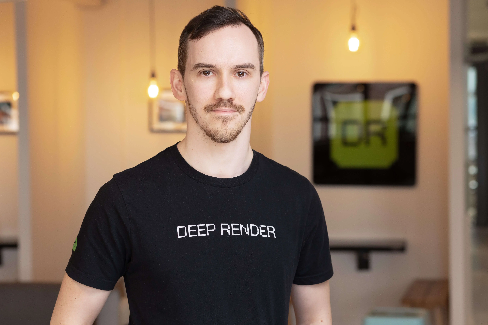

I'm an ML Engineer and co-lead of the AI codec team at InterDigital. My focus is on the fundamentals of ML model infrastructure: performance optimization, compilation, and getting models to run efficiently on real hardware. Before moving into engineering, I earned my DPhil in Mathematics at Oxford, studying the geometry underlying string theory. More recently, I've become fascinated by AI-native development workflows and spend my spare time building with the latest agent tooling.
London, United Kingdom
InterDigital Acquires Deep Render
Oct 2025Featured in press release: "InterDigital is the perfect home for Deep Render's end-to-end AI-based video compression technology... together we are uniting decades of video research with cutting-edge AI to drive the next generation of compression technologies."
Interview with Jan Ozer demonstrating the world's first AI codec running in FFmpeg and VLC—50% better compression than AV1, real-time encode, 2X decode on consumer devices.
Presentation at IP Group event on the future of AI-driven video compression.